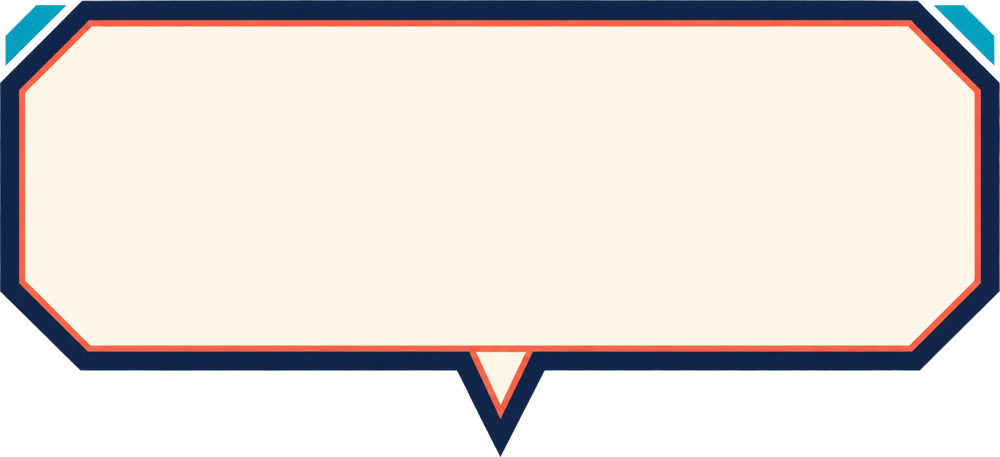

不用站上起跑線，
每一次出門，
都算數。
都算數。
1
2
3
GPS 跑步追蹤
打開手機，
城市就是你的跑道
城市就是你的跑道
📍 即時數據
🗺️ 路線軌跡
🎁 里程獎勵
距離
0.00km
時間
00:00
平均配速
--:--
分段即時配速
--:--
📶 GPS 精度 ±6m（正常）
▶ 開始跑步
■ 結束並上傳
STEP 01一鍵開跑
按下「開始跑步」
馬上開始記錄
馬上開始記錄
📶
手機 GPS 即時定位畫面直接顯示定位精度，訊號弱會提醒你換到空曠處
🔆
跑步中螢幕保持喚醒數據偵測中，跑完按「結束並上傳」
💾
意外關掉也不怕未上傳的跑步會保留，回來可以直接上傳
1
2
3
距離
2.10km
時間
12:08
平均配速
5:46/km
分段即時配速
5:32/km
STEP 02即時數據
距離、時間、配速
一眼掌握
一眼掌握
綠色軌跡畫出你的路線，每公里自動標記；
「移動時間」自動扣掉停等紅燈的時間。
「移動時間」自動扣掉停等紅燈的時間。
＊畫面數據為示意
STEP 03每公里應援
每跑滿 1 公里，
都有人為你加油
都有人為你加油
📳3 km 達成！

加油！你已經完成 3 km 了，保持這個節奏！
里程獎勵 · 每滿 1km +EXP +DP本趟 3 份
距下一份還要 0.76 km
+EXP +DP
+DP
STEP 04課表挑戰
跟著課表跑，
配速即時提醒
配速即時提醒
課表挑戰 · 節奏跑第 2/3 段
目標5:10–5:40 /km
再加速 ↑
稍放慢 ↓
配速剛好 ✓
本段進度2150 / 5000 m
完成整份課表即結算；400m 段配速達成度決定星數（全達 3★／部分 2★／完成 1★）。

城市探索關主挑戰打卡揭曉關主後，就用這套課表
在 GPS 跑步中正面對決，3★ 收服得卡。
在 GPS 跑步中正面對決，3★ 收服得卡。
＊課表數據為示意
STEP 05結束並上傳
跑完一按，
成績自動入帳
成績自動入帳
■ 結束並上傳
✓ 已記錄
距離 5.02 km · 時間 28:51 · 平均配速 5:45/km
已進活動記錄，里程 EXP 將於數秒後發放
每公里分段
🏁 里程自動計入進行中的活動／賽事
🚗 疑似搭車的路段自動排除，成績更公平
🔗 也能同步 Strava 或手錶數據
GPS 跑步追蹤
今天的路線，
由你來畫
由你來畫
▶ 開始跑步
www.dor.tw